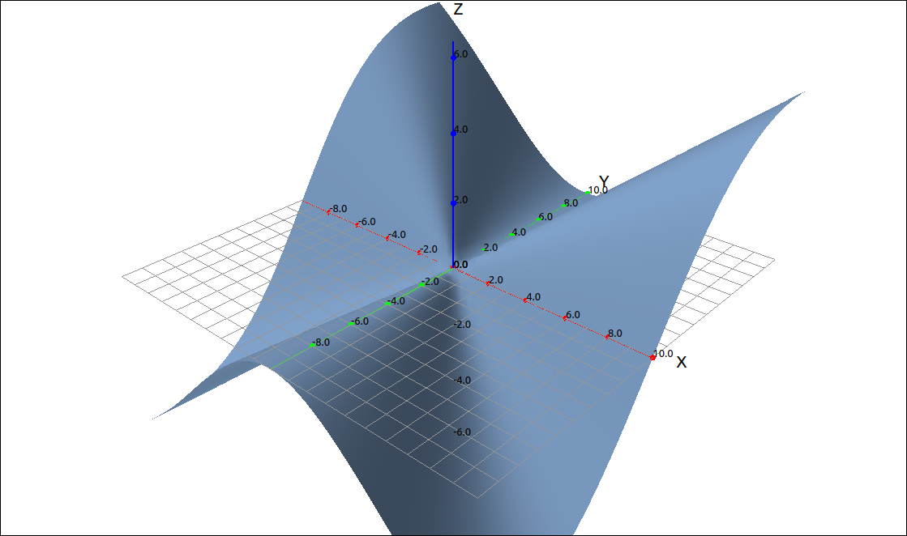
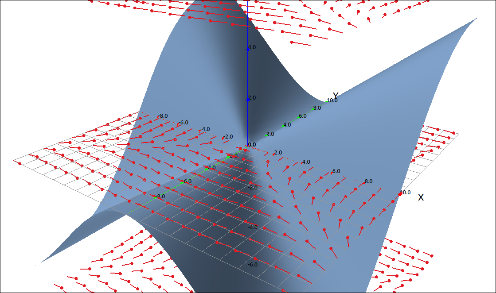
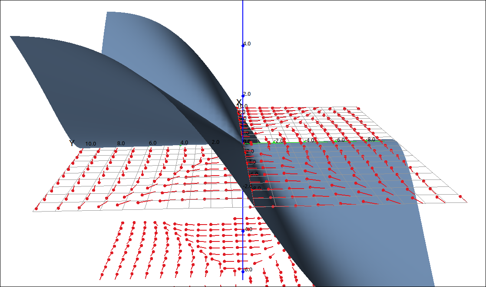
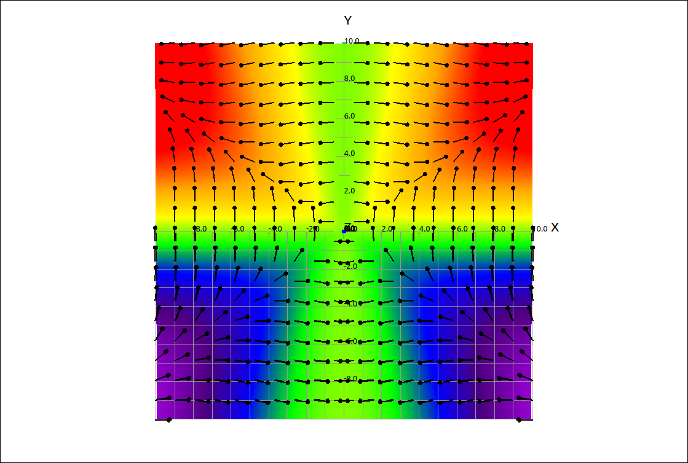
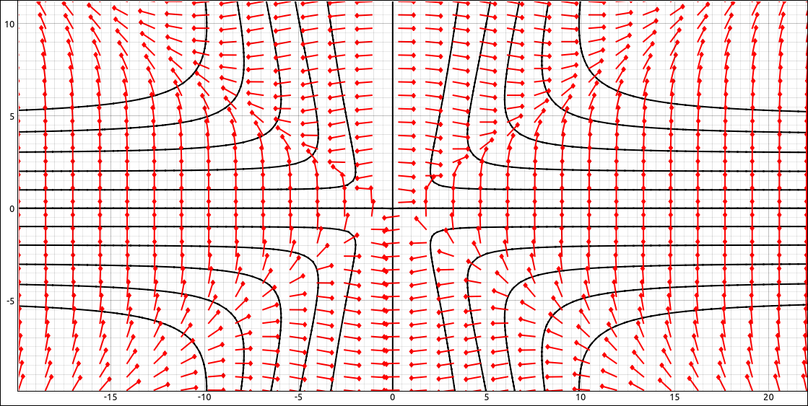
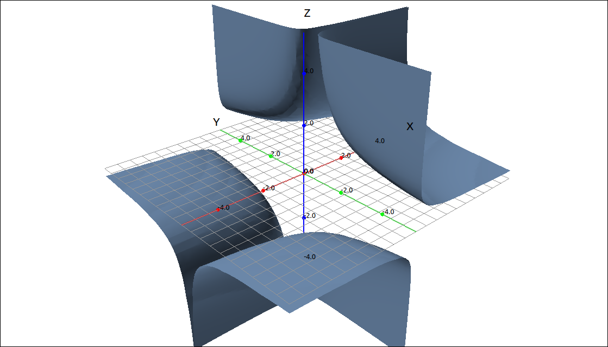
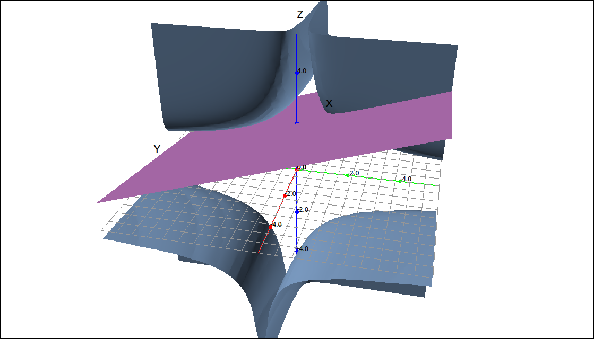

Directional Derivatives and the Gradient#
Directional Derivative#
Rcall that the partial derivatives \(f_x(x, y)\) and \(f_y(x, y)\) are the rates of change in the x and y directions. One question is can we find the rate of change on a surface at a point in a direction that is not parallel to the x or y axes. The answer is, of course, yes, we simply need to approach the point of tangency along the line in the direction of a unit vector \(\mathbf{u} = (a, b).\) This can be done easily by the following calculation.
Definition: Directional Derivative
The directional derivative of a function \(z = f(x, y)\) at the point \((x_0, y_0)\) in the direction of a unit vector \(\mathbf{u} = (a, b)\) is
if this limit exists.
Note that if our unit vector is \(\mathbf{i} = (1, 0)\) then
and if our unit vector is \(\mathbf{j} = (0, 1)\) then
So the directional derivative simply generalized the partial derivatives.
Fortunately we do not need to result to the limit definition when calculating the directional derivative, it can be written in terms of the partial derivatives and the direction vector.
Theorem: Calculating Directional Derivative
Given the function \(z = f(x, y)\) and a unit vector \(\mathbf{u} = (a, b)\) then,
The Gradient Vector#
Note from the last theorem on calculating the directional derivative, we can rewrite the expression as the dot product of two vectors.
The first vector in this dot product comes up fairly often and we give it a name.
Definition: Gradient Vector
Let \(f(x, y)\) be a function of two variables, then the gradient of f is the vector function \(\nabla f\),
Given the above notation we can rewrite the directional derivative calculation.
Theorem: Calculating Directional Derivative
Given the function \(z = f(x, y)\) and a unit vector \(\mathbf{u} = (a, b)\) then,
Example: \(f(x, y) = x^{2} \ln{\left(y \right)}\) at \((3, 1)\) in the direction \((-5, 12)\)#
CLAE#
This calculation in CLAE takes only a couple of steps. First input the expression,
x^2*ln(y)
Find is gradiant with Calculus > Vector Calculus > Gradiant, the result should be,
Evaluate this at \((3, 1)\) with Algebra > Evaluate, keep the variables as [x, y] and input [3, 1] for the expressions. The result should be,
Now input the direction \((-5, 12)\) as a vector, the result should be,
This is not a unit vector so we will convert it using Vector > Normalize, the result should be,
Finally take the dot product of this and the evaluated gradiant vector with Vector > Dot Product and the result is \(\frac{108}{13}.\)
Note
Note that all of this can be generalized to three variables,
Definition: Directional Derivative
The directional derivative of a function \(w = f(x, y, z)\) at the point \((x_0, y_0, z_0)\) in the direction of a unit vector \(\mathbf{u} = (a, b, c)\) is
if this limit exists.
Definition: Gradient Vector
Let \(f(x, y, z)\) be a function of three variables, then the gradient of f is the vector function \(\nabla f\),
Theorem: Calculating Directional Derivative
Given the function \(z = f(x, y, z)\) and a unit vector \(\mathbf{u} = (a, b, c)\) then,
Properties of the Directional Derivative and the Gradiant#
Suppose we have a function f of two or three variables and we consider all possible directional derivatives of f at a given point. These give the rates of change of f in all possible directions. We can then ask the questions: in which of these directions does f change fastest and what is the maximum rate of change?
This is fairly easy to determine, consider the following derivation from the equations above,
Remember that \(\mathbf{u}\) is a unit vector and \(\theta\) is the angle between \(\nabla f\) and \(\mathbf{u}.\) This last formula is a maximum when \(\cos(\theta) = 1\) and hence \(\theta = 0.\) So the maximum directional derivative is \(|\nabla f|\) and happens when \(\mathbf{u}\) is in the same direction as \(\nabla f.\)
Another interesting property is between the gradiant vector and the level curves (or surfaces) of the function. We will look at the situation with level curves, surfaces follow the same derivations and logic with three variables instead of two. Take a level curve to a function of two variables, that is, \(f(x, y) = k\) for some constant k. The level curve is a line so it can be represented as \(\mathbf{r}(t) = (x(t), y(t)).\) So \(f(x(t), y(t)) = k,\) taking the derivative of both sides gives us,
The vector \(\mathbf{r}'(t)\) is tangent to the level curve and since the dot product of this and the gradiant is 0, the gradiant vector is perpendicular (orthogonal or normal) to the level curve or surface.
We summarize the discussion above with the following theorem.
Theorem: Properties of the Gradiant Vector
Let f be a differentiable function of two or three variables and suppose that \(\nabla f(\mathbf{x}) \neq \mathbf{0}.\)
The directional derivative in the direction of a unit vector \(\mathbf{u}\) is \(D_{\mathbf{u}}f(\mathbf{x}) = \nabla f(\mathbf{x}) \cdot \mathbf{u}.\)
\(\nabla f(\mathbf{x})\) points in the direction of the maximum rate of increase of the function f at the point \(\mathbf{x}\) and that maximum rate is \(|\nabla f(\mathbf{x})|.\)
\(\nabla f(\mathbf{x})\) is perpendicular (orthogonal) to the level curve or surface of f at the point \(\mathbf{x}.\)
Example: Visualizing the Properties of the Gradiant Vector Theorem#
We will illustrate the second and third parts of the theorem with the function of two variables,
CLAE#
First input the function,
x^2*y/(x^2 + y^2)
Click and drag this over to the 3D graphics window, the image should look like the following (we did scale the z-axis a little).

\(f(x, y) = \frac{x^{2} y}{x^{2} + y^{2}}\)#
Select the function and take its gradiant with Calculus > Vector Calculus > Gradiant the result should be,
which simplifies to
What we want to do now is plot a grid of gradiant vectors along with this surface so we can see a relationship between the surface and the gradiant vectors. To do this we need to rewrite the gradiant as a three dimensional vector instead of a two dimensional vector. Assuming that this last vector was in R3, select Edit > Input Vector or hit the corresponding toolbar button. Input R3, 0 and click OK. The result is,
This just put in a 0 for the z component. Click and drag this vector over to the 3D graphics window, it should come in as a vector field, which is what we want. Go into the properties and change the number of z divisions to 3 (which is the minimum). Also change the x and y grid divisions to 20 each. The image you get should look like the ones displayed below. Move the graph around and notice that the vectors are pointing in the direction that is moving up the surface. Hence the gradiant vectors are in the direction of the maximum increase of the function.

Surface and Gradiant Field#

Surface and Gradiant Field#
Another way to see this is using a color contour map. Here is how we can do this. For the surface, go into the properties and change the surface shading to shade surface by height. Change the gradiant vector colors to black. Select Camera > Position to Top of Z-Axis and select View > Orthogonal Mode. You should see the following image.

Surface Color Contour and Gradiant Field#
The colors go ROYGBIV from top to bottom. Here again we can see that the gradiant vectors point in the direction of moving up the surface.
To visualize the third statement we will use the 2D graphics window. Click and drag the original function over to the 2D graphics window, change the type to Contour Map, select View > Set View Window to 1-1. Click and drag the gradiant vector (2D version) to the 2D graphics window, it should come in as a vector field. The image should look like the following.

Contour Map and Gradiant Field#
Note that the gradiant vectors are perpendicular to each of the graphed level curves.
Tangent Planes to Level Surfaces#
Extending the above theorem just a little. If we have a level surface, that is, \(f(x, y, z) = k\) and a point \(P = (x_0, y_0, z_0)\) on the surface, we know that the gradient vector \(\nabla f(x_0, y_0, z_0)\) is normal to the surface at P, and hence is a normal vector to the tangent plane to the surface at P. Hence the equation of the tangent plane to f at P can be written as,
Example: Tangent Plane to \(x y^{2} z^{3} = 8\) at \((2, 2, 1)\)#
Here we will use the above theorem to find the tangent plane to the surface \(x y^{2} z^{3} = 8\) at the point \((2, 2, 1).\)
CLAE#
First input the surface, in CALE we need to define all implicit curves and surfaces as expressions equal to 0, so we rewrite this as \(x y^{2} z^{3} - 8 = 0.\)
x*y^2*z^3 - 8
CLick and drag this over to the 3D graphics window. The plot may look a little rough, to smooth it out go into the properties and set the grid divisions to 50 each. We did zoom in a little for the following image.

Surface#
The tangent plane takes only a couple steps, take the gradiant vector with Calculus > Vector Calculus > Gradiant the result is,
Now evaluate it at the point \((2, 2, 1)\) with Algebra > Evaluate, leave the variables as [x, y, z] and input for the expressions [2,2,1]. The result is,
This is a normal vector to the tangent plane. To make the editing a minimum we will create the vector,
Use the vector input dialog and input [x-2, y-2, z-1]. Now take the dot product of this and the evaluated gradiant vector to get the tangent plane,
which means
CLick and drag this over to the 3D graphics window.

Surface and Tangent Plane#